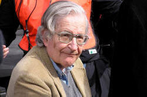
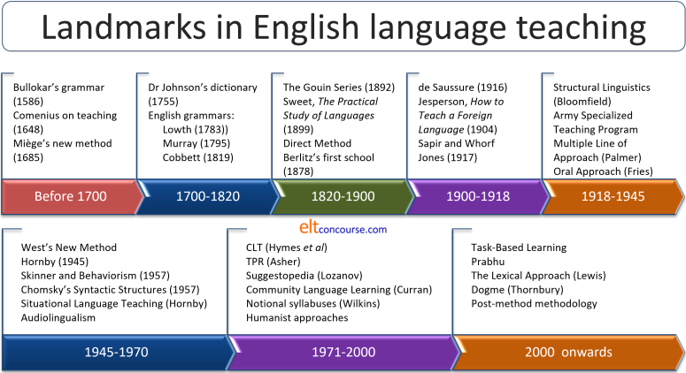
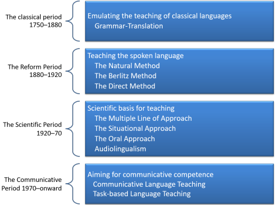
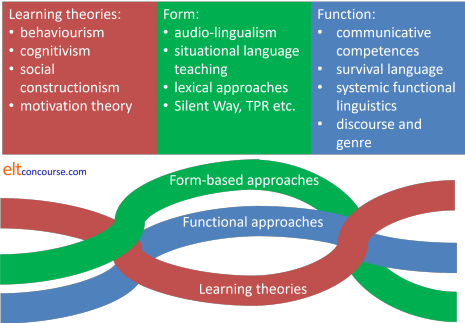

The history and development of English Language Teaching
 |
Why the history lesson?
|
If you would understand
anything, observe its beginning and its development.
Aristotle (384 – 322 BCE)
The history of English Language Teaching is often presented from
a methodological perspective with the implication that newer or
more recent approaches to teaching the language were or are
somehow superior to what had or has gone before.
A more sensible approach is to try to see the development of ELT
not has a competition between methodologies but as a
development
from methodology to methodology with a good deal of overlap when
one compares, in particular, the design of teaching materials.
 |
Definitions of methodology |
There are two common ways to define methodology in English Language Teaching and, graphically, this is how they look:

The left-hand set was developed by Anthony in 1963. The right-hand set was developed from Anthony's definition later and appears in Richards and Rogers, 2001. Briefly:
- Approach
- For Anthony, an approach was simply a
set of principles or ideas about the nature of language learning
For Richards and Rogers it was similar but explicitly divided into theories of what language is and theories of how learning a foreign language happens.
The second of these definitions has the advantage of being quite explicit. - Method or Design
- For Anthony, method described the plan for the presentation
of language which is consistent with the approach.
Richards and Rogers' concept of design is somewhat broader and covers the practical implications in the classroom: syllabus design, activities and the roles of teachers and students
These are not all that different but again, the latter one is more explicit. - Technique or Procedure
- Technique, for Anthony, was simple any teaching trick or way
of doing something in the classroom such as eliciting,
approaching a reading text, encouraging authentic speaking,
drilling and so on.
For Richards and Rogers, too, the term procedure refers to what we see happening in the classroom when a particular approach and design are implemented, day to day.
It actually doesn't matter all that much which breakdown you accept. Both are fairly arbitrary and subjective ways of breaking down a complex area.
 |
Once upon a time ... |
The authority in this area is Howatt (1984, revised 2nd edition with
Widdowson, 2004 and with Smith, 2014) and he traces the
development of English Language Teaching far further back than most
people realise it goes. He records the use of dialogues, often parallel
translation ones, to demonstrate rather than inform.
Here's an example, taken from a set of materials enabling French
speakers (probably Huguenots who fled to England from France in the late 17th and
early 18th centuries) to compare the English way of expressing things
with their own language.
It is from Guy Miège (1685), Nouvelle méthode pour apprendre
l'Anglais. It could just as well be used by an English
speaker to learn French.

If you find that difficult to read:
| Si l'on veut fumer du Tabac, on y trouve non seulement les Pipes & la Bougie, mais aussi en quêques Endroits le tabac même, gratis. Le Caphé & le Thé payent pour tout. | If you will take Tobacco, you find not only Pipes and Candle, but in some places the Tobacco, gratis. So that the Coffee, or the Tee, pays for all. |
| V. Combien se vend donc la Tasse de Caphé, ou de Thé? | V. How much do they sell a Dish of Coffee or Tee? |
| M. Un sou. | M. A Peny a Dish. |
| V. En verité, cela est commode. | V. Truly, 'tis mighty convenient. |
And so on. This is not too far removed from many modern course
materials which, without the translation in many cases, set a
conversation in a common environment to allow the language to be
demonstrated in action. Truly, 'tis a mighty convenient way to
present language for analysis.
There were, of course, many other attempts to help people learn foreign
languages but they have little in common and do not consistently draw on
any theories of learning or of language itself.
 |
Grammar translation: 1750 onwards |
The 19th century saw the first fundamental change. The importance given to the study of Latin and Greek as a way of accessing ancient literature bled over into the teaching of modern languages, too. The approach had (and, indeed, still has) five main strains:
- Conscious memorising of grammatical rules
- Focus on the sentence as the unit of study
- Conscious memorising of lists of lexis with their mother-tongue translations
- Translating in and out of the target language as practice
- Reading the literature of the target language
Additionally, there was a focus on memorising tedious lists of exceptions to the rules.
We should be careful not to ascribe the approach only to the
teaching of English. It was the way in which the teaching of
any language was intended to be implemented and English was, at the
time, not particularly widely taught or used as a lingua franca
as it was in later centuries.
It is worth noting that in the early 19th century, the population of
France exceeded that of the USA and Britain combined and it was
French that dominated as the natural language of communication
between people with different first languages. (The term
lingua franca translates from Latin as the language of the
French, of course.)
The aim
of the approach was primarily to allow the student
access to the literature of the target language. Few
except portions of the elite travelled widely and there was little need or
opportunity to encounter native speakers or to communicate
in the way that, e.g., Huguenot immigrants needed to find
the cheapest coffee shops with free tobacco.
Increasingly, however, with the rise of an affluent class of people
able to travel to foreign parts the realisation was dawning that
some learners did indeed need language to communicate and within a
grammar-translation approach innovative teachers were supplying some
communicative practice, albeit in an unstructured and inconsistent
way.
The custom for the elite and wealthy of taking The Grand Tour (a
kind of travelling finishing school for the sons of the
aristocracy) added somewhat to the pressure for an education in
modern languages which would allow for a modicum of oral
communicative competence, taking in, as it usually did, a journey
across France, Germany, Switzerland, Italy and often to Greece and
even Turkey.
The term Grammar Translation to describe the approach was not, in fact, coined until the 20th century although the method itself was recognised and sometimes described as The Classical Method implying that it sought to treat the teaching of any modern language in the same way that the teaching of Ancient Greek and Latin was conducted. In Palmer's words, cited in Howatt and Smith (2014: 81):
'The Classical Method' treats all languages as if they were dead
Grammar translation is not, as some fondly imagine, itself
dead. Its influence is widely felt. Many
self-help teaching manuals (such as the earlier versions of the
popular Teach Yourself ... series of books) involve the setting
out of grammar rules, followed by a list of translated lexis to
learn and then exercises (including translation) to practise
what has been studied. Secondary (and even primary)
schools around the world adopt the approach consistently and it
may have been part of your learning experience.
(Since 2012 the Teach Yourself series has abandoned
the presentation of rules in favour of a so-called 'discovery
method' which encourages the learner to figure out the rules
from the examples. More later on the difference in these
approaches to rule-learning.)
Taking an historical rather than methodological perspective, we can refer to this era in ELT as The Classical Period which Howatt and Smith (2014:78) date from 1750 to around 1880.
 |
Reactions to grammar-translation approaches and the Reform Movement: 1880 onwards |
Historically rather than methodologically, The Reform Period dates from around 1880 to 1920.
Starting in the 19th century and continuing to the present, the grammar-translation approach has been criticised primarily because it focuses on form at the expense of meaning and communicative ability. Many early critics and reformers drew on analogies with how we learn our first language. By the end of the century, the Reform Movement's fundamental principles had been established by Henry Sweet (1845-1912) as:
the primacy of speech, the centrality of
the connected text as the kernel of the teaching-learning process, and
the absolute priority of an oral methodology in the classroom
In Howatt, op cit.: 171
The central concern, then, of the reformers was to focus on the spoken language rather than on the literature of the target language culture. Pronunciation was also forefronted: Sweet was an accomplished phonetician.
Methods arising from the Reform Movement include a very wide range of inventions (some patented), the first two of which are still influential:
- The Natural Method which sought to emulate the ways in which children learn their first language. Unfortunately, at the time there was very little knowledge about how children acquire their first languages so much was based on simple intuitions and on the assumption that children learn by imitation of adults.
- The Direct Method which arose from it and was popularised by Maximilian Berlitz (1852-1921) and still in use in many schools. The Berlitz Method is now a registered trade mark. The Direct Method was so called because it insists that only the target language is used from day one of the course and meaning is conveyed by pointing, gestures, tone of voice etc. Of course, today, many methods take a similar approach, denigrating or forbidding the use of translation.
- The Gouin Series teaching, developed by François Gouin
(1831-1896), is one in which language is presented as a series of
logically sequential steps in undertaking everyday activities.
Gouin theorised that his failure to learn German by memorising lists
of vocabulary and grammatical rules stemmed from the fact that the
language items he was attempting to learn were unconnected. In
this approach, the teacher presents a series of actions accompanied
by mime and images if necessary and the learners repeat the actions.
For example, at the end of a lesson:
I gather up my books and papers, I put them in my bag, I stand up and walk to the door, I open the door, I turn to say goodbye to my classmates, I go through the door, I go down the stairs, I leave the building.
The method has a good deal in common with later approaches such as Situational Language Teaching and Total Physical Response (the latter because in some versions of the Gouin Series approach, learners are encouraged to mime the actions, too).
The key principles of the Series Method as it came to be known are:- We learn language by turning perceptions in conceptions. When we see an object or observe and action, we can associate the language for it with the perception of it (anticipating a situational approach to language teaching).
- We do not acquire language by learning isolated elements of it but in whole, meaningful chunks (anticipating, to some extent, a lexical approach).
- The verb is the most meaningful language item (anticipating Halliday and functional linguistics).
- It is easier to learn language if it is placed in a logical order of events (anticipating Total Physical Response).
- Grammar is important but need not be explicitly taught (anticipating Krashen's learning-acquisition hypothesis).
Scientific methods
|
Howatt and Smith (op cit.) characterise this period (dating
from around 1920 to 1970) as The Scientific Period because the
approach to teaching sought to utilise insights from linguistics
and psychology in particular. Both the content of teaching
and the approach taken in the classroom were, it was often
claimed, based on science rather than intuition.
In 1924, Palmer (1924: 2) published an important work which
sought to place
linguistic pedagogy once and for all on a truly scientific basis
Early in the 20th century, there arose in the UK an approach to teaching which relied on two principles:
-
That language should be taught and presented in a social context: a situation.
-
That the focus of the syllabus should be on word order, inflexion and the distinction between structural words and content words. (For more on this distinction, see the guide to function words on this site, linked below.)
The outcome of this, which came to be called The Situational
Approach, was productive and
many teaching materials still rely heavily on
presenting language, often via dialogues, in settings such as
at
the coffee shop or in the station etc. You are probably
familiar with some of them.
As two of the founders of the approach state:
The language a person originates ... is always expressed for a
purpose.
Frisby and Halliday in Richards and
Rogers (2014: 48)
From this approach, incidentally, arose the prescription of a Presentation–Practice–Production structure to a language lesson and that is one which is frequently followed by teachers who would not fall into the camp of Situational Language Learning but who nevertheless find the procedure a helpful and accessible approach to lesson design.
The Situational Approach's view about how languages are learned rested on the same basis as the audio-lingual approach (see below).
There were other scientific methods developed in the same period including The Multiple Line of Approach (Palmer in Japan) and The Oral Approach (Fries in the USA) which had similar ambitions in terms of science and similar prescriptions for teaching.
 |
Audio-lingualism: another scientific approach: the 1940s onwards |
Richards and Rogers (op cit.: 13) describe the
Direct Method as
the product of enlightened amateurism
which is, as we have seen, not particularly fair to
those who were seeking to base teaching and materials selection on
well-researched scientific bases, but
change was on its way, as was a world war.
In 1942, the USA found itself in urgent need of a large number of
foreign-language speakers and turned
to academia for help.
At the time, powerful twin views of language and learning were
emerging in the United States and so was born The Army
Specialized Training Program, a fast and scientifically grounded
approach to teaching languages.
 |
Twin theories of audio-lingualism |
|
In order for a methodology to be truly recognisable as such, it is arguable that it needs to have a consistent theoretical basis. Audio-lingualism's claim to have these rests on:
|
Behaviourism is the theory of learning that still underlies how you train your dog or drill your learners' pronunciation. It can be visualised like this:

Briefly, and somewhat unscientifically:
- The process starts with a stimulus, say, a question from the
teacher such as
Where did you go yesterday?
put to the organism (in this case, a learner of English). The stimulus can elicit a variety of responses but only the 'right' one will be reinforced. - So, for example, if the organism responds with
I go to the cinema
the teacher will negatively reinforce it with
No, that's wrong
or simply not reinforce it by saying nothing.
A negative reinforcement is not, of course, necessarily a punishment. It can consist of no response at all or of the removal of something unpleasant. The reason your car forces you to wear a seatbelt by producing an irritating noise if you don't, is that the manufacturers of the system were relying on the removal of something unpleasant to inculcate good habits in the user. - If, on the other hand, the organism produces the preferred
response:
I went to the cinema
the teacher will reinforce it with
Yes, that's right!
(preferably in a loud and enthusiastic voice because the strength of the reinforcement is critical in instilling the correct habit). In this case, the reward is the teacher's approval but it could just as well be a chocolate biscuit. - Enough Stimulus > Response > Reinforcement cycles will see the habit instilled and the language acquired.
Here is an example of what is meant by verbal behaviour being conditioned by stimulus-response cycles, taken from Skinner (op cit.) and used by Koestler (1964 and elsewhere) in a cogent and entertaining demolition of operant conditioning in humans:
HE: What time is it?
SHE: Twelve o'clock.
HE: Thank you.
SHE: Don't mention it.
HE: What about lunch?
SHE: Fine.
Now, this conversation can be analysed into separate S-R units.
- HE makes the first response which is emitted probably to the stimulus of the sight of SHE.
- When HE emits the operant, What time is it?, the muscular activity, of course, produces the sound, which also acts as a stimulus for SHE.
- On the receipt of this stimulus, SHE emits an operant herself: Twelve o'clock., which in turn produces a stimulant to HE. And so on.
What happens when SHE responds to HE the first time with:
Oh dear, we're going to be late
is not considered.
Audio-lingualism is still a very influential approach. It
underlies drilling language in the classroom, setting mechanical (and
not so mechanical) exercises, exposing learners to patterns of language,
repetition of language and much else. The concept that good
language habits are born of repeated practice and exposure is by no
means unknown in almost all classrooms.
The idea that learners can figure out rules unconsciously for
themselves, given enough data to work on and exposure to language
samples that exemplify the rule we would like them to acquire, underlies
much of modern inductive learning approaches in the classroom.
More on the meaning of 'inductive' follows.
At the same time, in France, a method for teaching French arose
called the Audio-Visual Method which incorporated film strips into
language laboratory exercises.
The language laboratory itself was the outcome of enhanced interest
in scientific approaches to language teaching and its very name
epitomises the new focus on science and technology to overcome the
difficulties of learning a foreign language.
We now need to
consider the criticisms which have been levelled at structuralism and behaviourism.
Unsurprisingly, this approach to language learning (or any
understanding of behaviour in humans) has not been without its
critics.
The most serious critic of behaviourist approaches to language learning
remains Chomsky and it is to him we turn next.
|  |
Chomsky |
There is a guide concerned only with Chomsky's theories which
is linked in the list at the end.
Noam Chomsky, an American linguist, is probably most famous
in language teaching for his work on transformational generative
grammar but it is his aversion to behaviourist learning theories
and structural linguistics which concerns us here.
He is famously cited as asserting:
Language is not a habit structure.
Ordinary linguistic behaviour characteristically involves
innovation, formation of new sentences and patterns in
accordance with rules of great abstractness and intricacy.
Chomsky, 2003:349
What this means is:
- structural linguistics is inadequate to describe language and
- behaviourist learning theories are inadequate to describe how language is learned.
In other words: it's all wrong.
The key criticisms of behaviourism are fourfold (and they aren't all Chomsky's alone):
- Unpredictability
- How do you know what someone will say when presented with a stimulus?
In our example, above, of the teacher eliciting the past tense of the verb
go, what happens if the learner (or the organism) produces the perfectly
correct:
Somewhere I've never been before
or
What time last night?
or any other of many thousands of possible responses. - Reinforcement
- Reinforcement does not occur regularly. Parents and others
regularly approve statements that are true (or cute) rather than
grammatically accurate. For example, in response to seeing a
horse if a child produces
Look at the big doggy!
many adults might respond positively because it's a cute and endearing thing to say, albeit wrong. How, then, do children learn to see where the meanings of words start and stop?
Equally, if a child says
It a horse!
in response to a follow-up question, adults might well be tempted to approve because it's right rather than correct the grammar. - Response strength
- is variable. We don’t always shout our approval. In fact, it's sometimes more effective to reply in hushed, awe-struck tones.
- Innovation
- Speakers of all languages consistently produce novel and unique
utterances. For example, I may say
There's a green dodo in my cantaloupe juice.
Whatever you may think of my state of mind, you will understand what I am saying although you and I have never heard or said it before. If language is a habit structure, how did I do that?
By the way, Chomsky's famous example of this was
Green ideas sleep furiously.
The criticisms of structural linguistics are quite technical and complex. Here we will take just two:
- Ambiguity
- Take this famous example: Visiting aunts
can be boring
It could mean:
Aunts who visit can be boring
Visiting your aunts can be boring
If we want to understand the sentence we need to go beyond the rules of structural linguistics and consider what is called deep structure. We do this by considering whether the word visiting is a participle adjective describing aunts or a gerund of the verb visit.
The problem that ambiguity poses for structural linguistics is serious because it relies on a tree diagram to parse a sentence. In the case of this example, however, we cannot identify whether the subject noun phrase is a plural noun modified by the adjective visiting or a singular verbal noun referring to the activity of visiting aunts.
There is a slight cheat here, of course, insofar as the English modal auxiliary verb can does not inflect for number or person. It would not be possible to set this ambiguity up at all in, say, German, because the modal auxiliary verb differs depending on whether the subject is plural (aunts) or singular (visiting). Remove the verb altogether in English and we arrive at the unambiguous pair:
Visiting aunts are boring
Visiting aunts is boring - Rules of use
- This is a famous citation from Hymes (1971:278):
There are rules of use without which the rules of grammar would be useless.
For example, if I say
It's cold in here
I may be asking you to shut the window, telling you to put the heating on, advising you to get dressed or any number of other things and we don't know what it means solely by applying grammatical rules. We use rules of use. See the initial guide to form and function, linked below, for more.
For much more on Chomsky, his criticisms of Structural Linguistics and something on the Language Acquisition Device and Universal Grammar, follow the guide to Chomsky.
Cognitivism: 1950s onward |
Theories of cognitivism (as opposed to
behaviourism) underlie much of post-behaviourist language
teaching.
Cognitivism is concerned with the investigation of how people
think – their internal mental states. In our field,
this means thinking about how people process language and
information to construct dependable rules for its use.
There are two ways to process information according to the theory
(although many have pointed out that the approaches are not mutually
exclusive).
- If you are given a rule and then told to apply it by
deducing what the correct
form should be, you are using your brain to extrapolate from a
rule to a single example of language.
For example, if you are told the rules to form regular past tenses in English and then asked for the past tense of smoke, live, pack etc., you should be able to come up with the correct forms.
That's deductive learning. - If, on the other hand, you are
given the examples first (pack-packed, live-lived,
smoke-smoked, type-typed, garden-gardened etc.) and then
asked to state the rule you could use your brain to generalise
that verbs ending in -e take -d and those not
doing so take -ed.
That's inductive learning.
This is a fundamental distinction.
There are those who will aver that one or the other is 'better'
but that's an oversimplification. It may be that some of
us are better at one form of thinking than the other or that
some forms of problem are more susceptible to being solved by
one way of thinking than the other. It may also be a
combination of the two.
Additionally, the dichotomy is false because even if one acquires a rule
inductively, one applies it deductively. It would be perverse to
put our learners to the trouble of figuring out a rule from the data and
then not ask them to apply it.
Either way, looking at learning through this lens focuses on the
fact that humans make sense of the data they are given by making
hypotheses about the truth. That's a cognitive view of
behaviour and learning.
Landmarks and landmark people |
Here's a selection. No two people are ever likely to agree about the exact content of a list like this. It is somewhere to start.
- Jacques Bellot (unknown dates)
- Bellot was a French refugee resident in Britain in the latter part of the 16th century who wrote the first attested book specifically aimed at teaching the English language. The book, The English Schoolmaster, appeared in 1580.
- William Bullokar (c.1530-1609)
- apart from devising a 40-character phonemic script (based on the Gothic alphabet), Bullokar also wrote the first ever grammar of English (Pamphlet for Grammar, 1586) modelled on Lily's grammar of Latin.
- John Amos Comenius (1592-1670)
- was a hugely influential educational thinker and
philosopher. He believed that languages should be learned
pleasantly, in small steps, respecting the pupil's imagination
and personality. He is often quoted thus:
Clearly lay down the end at which you aim, and neglect all that does not bear on that end: keep to one example and one explanation of it, relying on practice for all else: advance by gradual steps, remember that steady, continuous progress is notable progress; therefore, no day without a line, no hour without its task: leave nothing undone when once begun.
In 1648 he wrote and published a long work entitled Linguarum Methodus Novissima (Newest Method of Languages). - Guy Miège (1644-?1718)
- The excerpt above from his Nouvelle méthode pour apprendre
l'Anglais is one example of the growth of interest in learning
languages as people in Europe began to travel more (often driven
by persecution) and the dominance of Latin as a lingua
franca was being challenged.
Miège also published The Great French Dictionary in 1688. - Dr Samuel Johnson (1709-1784)
- published his 2-volume Dictionary of the English Language in 1755, arguably the most influential dictionary of all time.
- Robert Lowth (1710-1787)
- is famous for having declined the offer of the Archbishopric of Canterbury but even more so for his anonymously published Short Introduction to English Grammar (1783) which was immensely influential on later grammars of English.
- Lindley Murray (1745-1826)
- published English Grammar, adapted to the different classes of learners in 1795 which was the most widely used grammar of its time.
- William Cobbett (1763-1835)
- is best known as a political polemicist, less known for his very influential Grammar of the English Language (1819) which was and remained for many years the most influential of grammars of English.
- Johann Fick (1763-1821)
- wrote the first grammar translation course in English entitled Praktische englishe Sprachlehrer in 1793.
- François Gouin (1831-1896)
- invented the series method of language learning and teaching after a disastrous attempt to learn German. His book entitled The Art of Teaching and Studying Language was published in Britain in 1892. He established a chain of schools and introduced Daniel Jones to the study of language. His influence, never strong, has waned.
- Henry Sweet (1845-1912)
- Sweet's 1899 book, The Practical Study of Languages, was, until that time, the greatest contribution to language teaching methodology. As a phonetician, he is reputed to be the model for George Bernard Shaw's character of Henry Higgins in Pygmalion.
- Maximilian Berlitz (1852-1921)
- opened his first school in 1878 and others quickly followed
in the USA and Europe. He was impressed by the progress
his students made with a teacher of French who spoke no English in class
(because he could not) and conversed only in French with the
learners.
He is often called the originator of Direct Method teaching in which the use of anything other than the target language is deprecated. - Ferdinand de Saussure (1857-1913)
- is sometimes referred to as the father of modern linguistics. His influence is felt in every branch of linguistics, including language teaching. His distinction between langue (the speakers' knowledge of a language system) and parole (what is actually said) is akin to (but not identical to) Chomsky's concepts of competence and performance.
- Otto Jesperson (1860-1943)
- was a Danish linguist specialising in English. In
1904, he published How to teach a foreign language
which remains influential and readable. He emphasised
engagement and immersion in the language as well as preparing
the ground for a lexical approach, claiming, for example that
the most indispensable expressions often are those irrational groups which cannot be constructed merely of words and grammatical rules
He also supported a discovery approach to learning, stating:
Never tell the children anything that they can find out for themselves.
His focus was also on the communicative nature of language:
there is a sensible meaning in all that is read or said or done
His book is freely available online. - Franz Boas (1858-1942)
- is not known for his influence on language teaching as much as for his influence on linguistics in general. One of his students was Edward Sapir. He helped to found the International Journal of American Linguistics and almost single handedly established a school of linguistic descriptivism which did not rely on the study of European languages.
- Edward Sapir (1884-1939)
- Sapir was a pupil of Boas and spent years working on descriptions of North American languages. He became convinced that each language reflects its culture and the ways of thinking of its speakers. With his pupil, Benjamin Whorf, the view that language determines thought is known as the Sapir-Whorf hypothesis.
- Leonard Bloomfield (1887-1949)
- was an American linguist who developed (among others)
structural linguistics during the 1930s. Structural
linguistics remains the theory of language underpinning
audio-lingualism, Total Physical Response and many other
structure-based approaches to teaching languages. He
published his major work, Language, in 1933.
Originally a professor of German in Ohio and later of Linguistics at Yale, Bloomfield was influential in linking British and American approaches to language teaching and, in 1942, he published an Outline Guide for the Practical Study of Foreign Languages which became the basis of the Army Specialised Training Program (ASTP) during WWII. - Harold E Palmer (1877-1949)
- published widely, particularly on phonetics and approaches
to teaching languages, and is credited as the father of British
Applied Linguistics. An influential publication (1917) was
the catchily entitled
The scientific study and teaching of languages; a review of
the factors and problems connected with the learning and
teaching of modern languages, with an analysis of the various
methods which may be adopted in order to attain satisfactory
results.
He suggested that language is best learned through a process of Auditory Observation (listening), Oral Imitation (repetition), Catenizing (pronouncing successions of sounds rapidly), Semanticizing (forming rules), Composition by Analogy (producing new language based on the models learned). Taken together, they constitute The Multiple Line of Approach. - Daniel Jones (1881-1967)
- is mostly famous for the development of the concept of
cardinal vowels and he is revered as a practical phonetician.
Gimson said of him:
wherever English is taught, his name is mentioned with respect and gratitude
He published the classic English Pronouncing Dictionary in 1917. - Charles Fries (1887-1967)
- In 1945, Fries published the highly influential Teaching and Learning English as a Foreign Language and he is credited with inventing the Oral Approach. He helped to found and worked at the prestigious English Language Institute at Michigan University where language laboratory techniques were pioneered.
- Michael West (1888-1973)
- is mostly remembered for a large range of teaching materials based on his New Method. He is also the author of The General Service List of English Words which is still in use.
- John Rupert Firth (1890-1960)
- Firth's influence is very widespread, especially among British applied (and pure) linguists. He designed a programme for teaching Japanese to Royal Air Force personnel during WWII. He was the first holder in Britain of a Chair of General Linguistics. His publications were collected in 1959 as Papers in Linguistics, 1934-1951.
- Albert Sydney (AS) Hornby (1898-1978)
- worked with Palmer in Japan and was instrumental in
developing Situational Language Teaching as well as producing
the first monolingual dictionary for learners of English.
He edited the English Language Teaching Journal after its launch
in 1946.
In 1954 Hornby published his Guide to Patterns and Usage in English which was and remains influential. - Charles Ogden (1889-1957)
- developed Basic English, an 850-word list designed to allow the communication of any day-to-day purpose. It came with 5 combinatory rules to assist in the production of adequately accurate language.
- The Colman Report (1929)
- was commissioned by the United States government and concluded that reading fluency should be the aim of foreign language teaching. It led to the Reading Method.
- Burrhus Frederic (BF) Skinner (1904-1990)
- was an American psychologist and founder of a behaviourist
theory of learning through operant conditioning (better known as
stimulus-response-reinforcement theory). The theory of
learning remains the underpinning of a range of structural
approaches to language learning and to techniques such as
repetition and written and spoken language drills.
In 1957 Skinner published Verbal Behaviour which sought to show that verbal behaviour is no different from any other form of behaviour. His views were famously and mostly successfully attacked by Noam Chomsky. - WWII (1939-1945)
- The USA's entry into the war in 1941 exposed the fact that they had too few people able to communicate in a foreign language. So was born The Army Specialized Training Program based on Bloomfield's structural linguistics theories and Skinner's behaviourist theories of learning.
- Post 1945
- The influence of the Army Specialised Training Program was still felt and audio-lingual methods (including the use of language laboratories) were developed to bring language learning within the reach of millions. Schools of foreign languages, especially English, sprang up in most developed countries. The origins of the British English as a Foreign Language industry can be traced to this time.
- The 1950s
- was a time of growth and development in Britain of linguistic theories associated with John Firth (1890-1950) who focused on the communicative nature of language and issues of context and collocation.
- Noam Chomsky (b. 1928)
- published Syntactic Structures in 1957 (see
Skinner) which argued that a behaviourist theory of learning and
structural linguistics were unable to explain either the
acquisition of language or its nature.
His theory rested and rests on a proposed Language Acquisition Device, Universal Grammar and Transformational Generative Grammar. See the guide to Chomsky for more. - Dell Hymes (1927-2009)
- an American linguist and coiner of the term
communicative competence. His work underpins much
of Communicative Language Teaching and functional approaches and
was influential in the design and publication of the Council of
Europe's Waystage (1990) and Threshold (1995)
descriptors of language competence.
Hymes developed his theory of speaking with the convenient acronym SPEAKING:
S for Setting (the time and place of the language)
P for Participants (who is addressing whom)
E for Ends (the purposes and intentions of the participants)
A for Act sequence (which speech acts follow and precede others)
K for Key (the manner and tone of the speech act)
I for Instrumentalities (style, dialect, register etc.)
N for Norms (the social rules governing speech act appropriacy)
G for Genre (the social conventions concerning how speech acts are sequenced and staged) - The 1970s
- saw an explosion in alternative methodologies including
Total Physical Response (Asher), Silent Way (Gattegno) and
Community Language Learning (Curran).
It was also a period of great interest in Communicative Language Teaching and testing. 1970 saw the publication of Wilkins' influential work on Notional Syllabuses. - The CEFR (Common European Framework for Languages) 2001
- has become the benchmark for most course materials design and a range of examinations setting a syllabus for both. It continues to be developed.
- Since then
- CLT has become the standard model of language teaching and
has been retro-fitted with a theory of learning based on social
interaction theory.
Task-based Language teaching / learning (Prabhu) is an approach within the discipline as is The Lexical Approach (Lewis et al), Dogme (Thornbury et al), Content and Language Integrated Learning (CLIL) and more.
Post-method methodology which seeks to deny the existence of a single 'best' way to teach and learn a language has also become influential.
Here's a summary of the critical developments.

The following is adapted slightly from Howatt and Smith, 2014 who take a synoptic view of the development of ELT rather than focusing on methodological competition.

The Natural Method referred to above pre-dates Krashen, SD & Terrell, TD, 1983, The natural approach: Language acquisition in the classroom.
Emerging from the dark agesNature, and Nature's laws lay hid in
night. |
We started this guide with the comment that:
The history of English Language Teaching is often presented from a methodological perspective with the implication that newer or more recent approaches to teaching the language were or are somehow superior to what had or has gone before.
This is an understandable tendency not confined to English Language
Teaching, which views the history and development of any field of
study as if it were a slow (or even quite rapid) advance from the
dark age of ignorance and superstition into the light of modern
science and understanding. The corollary is to see the history
of the profession as one punctuated by insights and paradigm shifts
sparked by the works of a few great thinkers and authorities.
We get a view that looks a bit like a jagged but ever-rising line
with sudden insights and new directions at each bend in the graph.
It is a tendency and a view which we will do well to guard against.
No academic domain progresses in this way.
A better way to visualise the development of English language
teaching is to view it as a series of overlapping threads which
entwine at times and then separate again.
So for example, in the 16th and 17th centuries much of the focus was
on functional language but, with the rise of interest in setting out
prescriptions for grammatical language the focus shifted to form and
the teaching of vocabulary alongside a series of translations.
In other words, the field has not progressed in a smooth curve,
leaving behind discarded theories and moving onwards and upwards to
the light but rather by emphasising different aspects of language
and learning at different times driven by the culture of the epochs
in which people were working.
It is an interlocking entwined system, not a linear progression which we can
visualise as:

None of this should be taken to imply that no progress at all has been made in 400 years of endeavour. Huge advances in understanding the psychology of learning and in analysing language, thought and consciousness have been made. Theories of learning, in particular, have become more sophisticated and some, even, empirically based. Theories of language, likewise, have been developed which describe and analyse language with ever-increasing rigour and range. Phonological studies, in particular, have been placed on a much more scientific footing helped in great part by technological advances in the processing of auditory data.
Academic disciplines do not, however, develop in a vacuum. For major
changes in focus and direction in any field of study, the cultural milieu in which a discipline operates
must be congenial to the development of ideas and new ways of
looking at the world.
It is, therefore, not a coincidence that Sweet, de Saussure and
Jesperson were active at a time (around last decades of the 19th and
the first two of the 20th centuries) when scientific study in all
fields, even those which had previously been the domain of armchair
philosophising, was becoming fashionable and new ideas of the
structure of matter and the natural world were beginning to question the Newtonian
universe. Einstein published his four ground-breaking papers in
1905 and the development of quantum mechanics was taking off.
Darwin published On the Origin of Species by Means of Natural
Selection in 1859. The period from the mid-18th to the
mid-20th centuries was one in which an empirical, science-based
methodology was developed across many fields of academia.
Sweet, de Saussure and Jesperson were leading lights in the search
for a rule-based understanding of language and a scientific approach
to teaching it but they were not at all alone.
After and during the second world war science and a scientific
approach to solving major problems were even more prominent and,
again, it is no surprise to find within linguistics, psychology and
the teaching of languages that scientific answers were sought and,
allegedly, found to explain how languages work and how learning
happens. Skinner, Bloomfield, Fries and Palmer (whose major
work had a title containing
The scientific study and teaching of languages) were all
actively seeking a scientific basis for the teaching and
understanding of language.
The pendulum swings |
Mechanistic and determinist views of nature began, soon after the
second world war, to be
called into question and again, ELT, was no laggard with the 1970s
seeing major developments in more communicative views of language
and language learning and the rejection by Chomsky (1957) of a behaviourist
view of language and by others, including Hymes (1971), of a purely structural
view of language.
Humanist approaches (e.g., in Stevick, 1980 and Moskowitz, 1978)
aimed at the whole person rather than operant conditioning and habit
formation became fashionable. Comenius (1592-1670) would not
have felt out of step with such approaches.
The pendulum had swung back again to language in use rather than
language as a system. It had also swung from treating learners
as empty vessels to be filled or organisms to be trained to treating
them as thinking, feeling people.
Lately, the pendulum has begun to swing back with a greater
recognition of the need to teach structure and pattern. Hence
a focus on noticing, functional linguistics, genre theories, lexical
approaches and so on, allied to a more inclusive approach which
recognises that formal linguistic ability is part of
communicative competence.
It probably has further to swing yet.
English language teaching is, naturally, not alone in exhibiting the
swinging pendulum and over the centuries we have seen it oscillate between
all is material and all is in the mind and back again, from substance
to form and back again, from structure to function and back and even
from waves to corpuscles and back to waves.
We should not, accordingly, be surprised to find that the pendulum will swing again.
 |
Where next? |
Taken together, the following led to a rise in the 1960s and 1970s of what many hailed as a new approach to language teaching, although, as we have seen, it wasn't really new, just relabelled:
- criticisms of structural linguistics (and the growth of descriptive rather than prescriptive grammars)
- criticisms of behaviourist theories of learning (and an emphasis on cognition)
- a recognition that language is primarily a means to communicate (and not only a set of grammatical rules and lexis)
- a recognition that learners need to know how to deploy the language they are learning in order to communicate
That approach is usually called Communicative Language
Teaching or CLT. It has become so dominant that there is a guide devoted to it
linked first in the list of related guides below.
It is not, and never has been, without its critics.
| Related guides (some linked above) | |
| Communicative Language Teaching (CLT) | a separate guide devoted to the most ubiquitous methodology and some criticisms of it |
| form and function | an initial and somewhat simplistic guide to the issues |
| function words | a guide to the word classes that formed part of the targets of a situational approach |
| Task-Based Learning | an approach often seen as a subdivision of CLT |
| The Natural Approach | Krashen and Terrell's approach |
| some alternative approaches | a guide which includes approaches such as Total Physical Response, Dogme and others |
| humanism in language teaching | for a review of the approaches which grew in importance in the 1970s and 1980s in particular |
| The Lexical Approach | a guide to an approach which focus on lexis rather than grammar |
| Chomsky | a guide to some of Chomsky's most influential theories |
| CLIL | for a guide to Content and Language Integrated Learning |
| post-method methodology | a guide to responses to a general dissatisfaction with the shortcomings of methodologies |
| syllabus design | the design of a syllabus often reflects a view of the best approach to teaching it |
| first- and second-language acquisition theory | an overview of the theories of how we acquire our first and learn a second languages |
There's a test on this that you can try if you like but you are not expected to have remembered all this for the purposes of most training courses. You are, however, expected to know about it.
References:
Berlitz: more information at
www.berlitz.com
Chomsky, N, 1957, Syntactic Structures, The Hague/Paris: Mouton
Chomsky, N and Otero, CP, 2003, Chomsky on Democracy & Education,
Psychology Press
Hymes, D, 1971, On communicative competence, in Pride, J. & Holmes,
J (Eds.), p 278, Sociolinguistics, London: Penguin
Koestler, A, 1964, The Act of Creation, New York: Penguin
Books
Krashen, S, 2009, Principles and Practice in Second Language
Acquisition, Internet
Edition
Krashen, SD & Terrell, TD, 1983, The natural approach: Language
acquisition in the classroom, London: Prentice Hall Europe
Howatt, APR, 1984, A History of English Language Teaching, Oxford: Oxford
University Press
Howatt, APR and Smith, R, 2014, The History of Teaching English
as a Foreign Language, from a British and European Perspective,
Language & History, 57:1, 75-95, available at https://doi.org/10.1179/1759753614Z.00000000028
Moskowitz, G, 1978, Caring and Sharing in the Foreign Language
Classroom, Rowley, MA: Newbury House
Palmer, HE, 1917, The scientific study & teaching of languages :
a review of the factors and problems connected with the learning and
teaching of modern languages, with an analysis of the various
methods which may be adopted in order to attain satisfactory
results, London: George .G. Harrap & Co.
Palmer, HE, 1924, Memorandum on Problems of English Teaching in
the Light of a New Theory, Tokyo: Institute for Research in
English Teaching
Richards, JC, and Rodgers, TS, 1986, Approaches and Methods in Language
Teaching, Cambridge: Cambridge University Press
Skinner, BF, 1948, Verbal Behavior, available from
http://www.behavior.org/resources/595.pdf [accessed October 2019]
Stevick, E, 1980, A Way and Ways, Boston, MA: Heinle and
Heinle
Wilkins, DA, 1976, Notional Syllabuses, Oxford: Oxford
University Press
World Language Classroom, Using the Gouin Series in the Foreign
Language Classroom, https://wlclassroom.com/2012/02/10/using-the-gouin-series-is-the-foreign-language-classroom
[accessed January 2020]